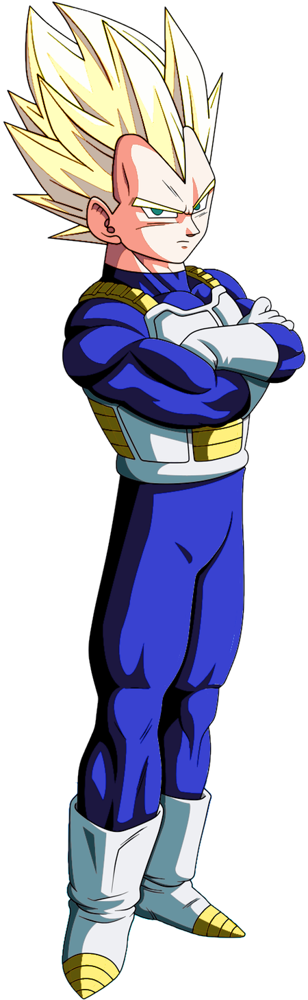
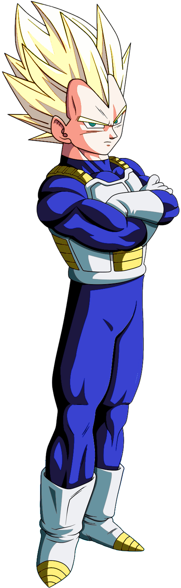

Son Goku
Goku es el líder de los Guerreros Z...
Técnicas: Kamehameha, Genkidama, Teletransportación


Goku es el líder de los Guerreros Z...
Técnicas: Kamehameha, Genkidama, Teletransportación
 

El príncipe del orgullo Saiyajin. Vegeta comenzó como enemigo de Goku, pero con el tiempo se convirtió en uno de sus más poderosos aliados. Orgulloso, competitivo y feroz, entrena constantemente para superar a Goku algún día.
Técnicas: Galick Ho, Final Flash, Big Bang Attack


Gohan es el hijo mayor de Goku. Es un joven bastante tímido desde su infancia, con carácter bondadoso y su inteligencia lo destacan por sobre el resto de los personajes de la serie. Debido a su naturaleza noble, Gohan detesta el hecho de que tenga que pelear como lo hace su padre, pero su gran poder, regido en buena parte por sus emociones producto de su descendencia Saiyajin, hace que tenga que defenderse y defender a aquellos a quienes ama.
Técnicas: Masenko, Kamehameha Padre-Hijo

Aunque en un principio fue el archienemigo de Son Goku, con el paso del tiempo fue haciéndose menos malvado hasta finalmente convertirse en un ser bondadoso y miembro de los Guerreros Z. A través del tiempo, también comenzó a tomarle cariño a su discípulo Son Gohan, a quien veía como una especie de "vástago" y formando un lazo de amistad con este.
Técnicas: Makankosappo

Krilin es el mejor amigo de Goku desde la infancia. Aunque no es tan fuerte como el resto de personajes Saiyajin, siempre ha estado presente cuando se le ha necesitado. Es considerado el humano más fuerte de la Tierra y se caracteriza por su valentía y lealtad inquebrantable.
Técnicas: Kienzan, Taiyoken